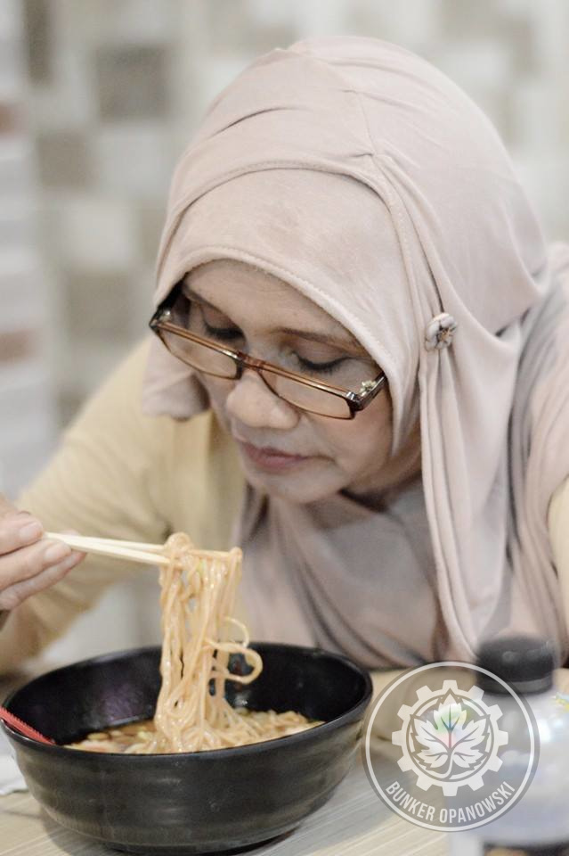
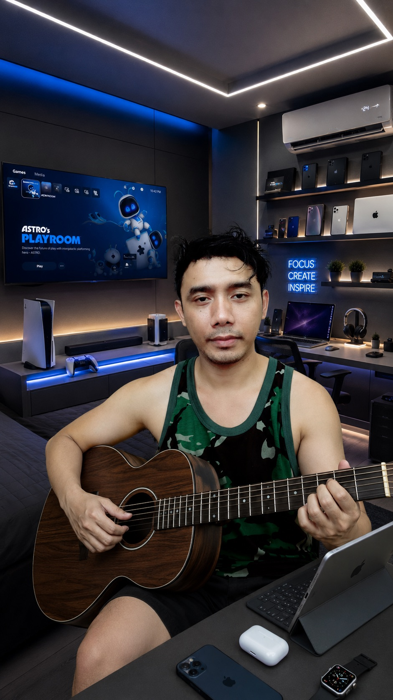

Ada alasan kenapa gw begitu tekun mendokumentasikan setiap detail kehidupan di Bunker Opanowski. Terkadang, sebuah foto sederhana bisa menjadi mesin waktu yang paling kuat.
Hari ini gw membuka folder lama. Dan ketemu foto ini.

"Gw ga nyangka nemuin ini hari ini... ada yang langsung nyesek pas liat foto ini."


1. Mesin Waktu Bernama Folder Lama
Gw ga pernah menyangka proses editing foto biasa bisa berubah jadi sesi perenungan yang dalam. Tapi itulah yang terjadi hari ini ketika gw buka arsip lama di MacBook Pro 2015 dan menemukan foto ini tersimpan rapi di sudut folder yang jarang dibuka.
Lokasinya di Bandung. Di frame itu ada Nyokap yang lagi asyik menikmati semangkuk ramen. Dan kalau lo lihat lebih teliti, ada kehadiran yang ga terlihat tapi terasa — saat itu Bayu, almarhum adik bontot gw, ada di sana juga.
2. Proses Editing: Lebih dari Sekadar Teknis
Secara teknis, proses hari ini sebenarnya cukup sederhana — gw perlu mengolah foto ini dan menambahkan watermark logo Bunker Opanowski.
Tapi yang terjadi justru jauh lebih dari itu. Setiap langkah editing terasa seperti ritual — sebuah cara untuk merawat ingatan, memastikan momen ini tidak hilang ditelan waktu.

"Akhirnya beres juga. MacBook tua ini masih bisa diandalin — asal tau triknya!"
MacBook Pro Mid 2015 gw memang sudah "uzur" — RAM-nya bisa kelabakan kalau file logo resolusi tinggi langsung ditempel ke foto tanpa diresize dulu. Solusinya: selalu resize asset besar sebelum digabungkan. Setelah file logo dikecilkan via GIMP, semua berjalan normal.
3. Kenapa Proses Ini Penting bagi Gw
Di tengah keterbatasan — internet 10Mbps, perangkat 2015, RAM yang kadang ngos-ngosan — semangat untuk mengabadikan momen keluarga tetap jadi prioritas utama gw.
Karena pada akhirnya, aset digital yang kita bangun bukan cuma soal angka, views, atau followers. Ini soal sejarah yang ditinggalkan.
Buka folder lama → temukan foto → edit & watermark via GIMP → export → publish sebagai Digital Log → kenangan terabadikan. Simple, tapi maknanya besar.
4. Tentang Bayu: Adik Bontot yang Selalu Ada
Gw ga akan banyak ngomong soal ini. Ada hal-hal yang lebih kuat dirasain daripada dijelasin.
Yang bisa gw bilang: ngeliat foto ini, momen Bandung itu — Nyokap yang asyik nikmatin ramen, suasana yang hangat, dan Bayu yang ada di sana — bikin haru yang beneran dalem.

Foto ini adalah pengingat bahwa setiap momen kebersamaan itu berharga. Jangan tunggu momen "yang tepat" untuk duduk bareng keluarga, makan bersama, atau sekedar ada di ruangan yang sama. Karena kita tidak pernah tahu kapan itu menjadi yang terakhir.
5. Terima Kasih, Bandung
Kota Bandung punya tempat tersendiri di hati keluarga kami. Udara, suasana, dan makanannya — termasuk semangkuk ramen yang ada di foto ini — semua menjadi bagian dari kenangan kolektif yang kami jaga bersama.
📌 Penutup
Dokumentasi bukan cuma soal konten. Bagi gw, ini tanggung jawab personal — mastiin kenangan orang-orang yang gw sayang ga hilang begitu aja.
Foto Nyokap menikmati ramen di Bandung itu, bersama Bayu — kini sudah menjadi bagian dari arsip digital Bunker Opanowski. Tersimpan, terproses, dan dipublikasikan sebagai bentuk penghormatan.
Terima kasih Bandung. Sehat terus Nyokap. Dan untuk Bayu — Al-Fatihah. 🙏

"Kenangan tersimpan, arsip digital aman. Tugas gw hari ini selesai — dengan penuh rasa syukur."
Punya kenangan serupa? Share di kolom komentar. 🍜